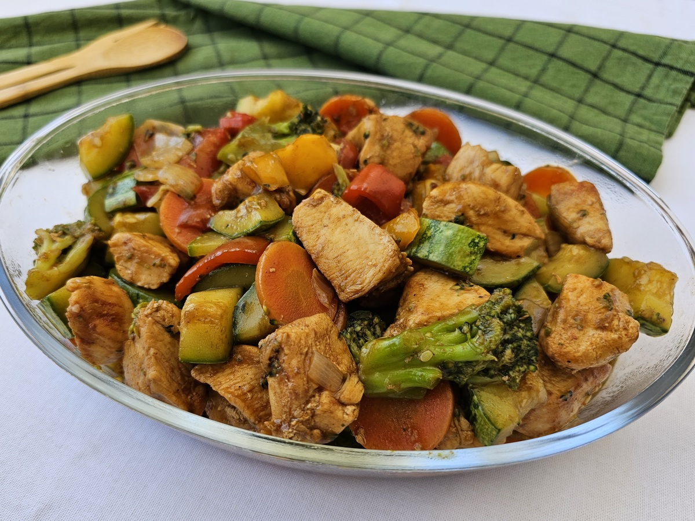

Ingredientes
1 kg de filé de peito de frango cortado em cubos
Sal e pimenta-do-reino a gosto
1 colher de sopa de vinagre branco (ou suco de limão)
Óleo vegetal
1 pimentão vermelho cortado em cubos
1 pimentão verde cortado em cubos
1 pimentão amarelo cortado em cubos
1 cebola cortada cubos
1 colher de sopa de alho triturado ou massado
1 colher de chá de gengibre em pó
1 fio de óleo de gergelim (opcional)
100 ml de shoyu
1 e 1/2 colher de sopa de amido de milho
1 xícara de chá de água
1/2 xícara de chá de amendoim torrado e sem pele (opcional)
Cheiro-verde picado a gosto

Modo de Preparo
1
Tempere o frango com o Tempero Fondor.
2
Aqueça 20ml do azeite de oliva, frite o frango e reserve. Na mesma panela, aqueça o restante do azeite de oliva e murche a cebola.
3
Acrescente os pimentões e refogue-os. Reserve.
4
Em uma panela, coloque a água, o MAGGI® Caldo de Carne e deixe ferver.
5
Acrescente o molho de soja light, os legumes, o frango, o roux e deixe apurar por cerca de 2 minutos, mexendo sempre, até que o caldo incorpore.
6
Finalize com amendoim e a cebolinha.